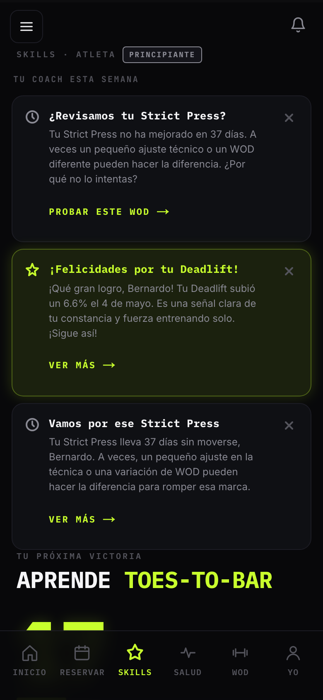
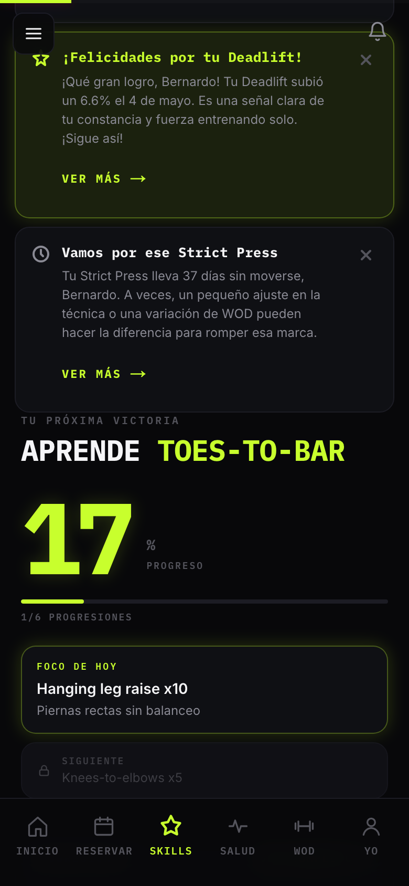
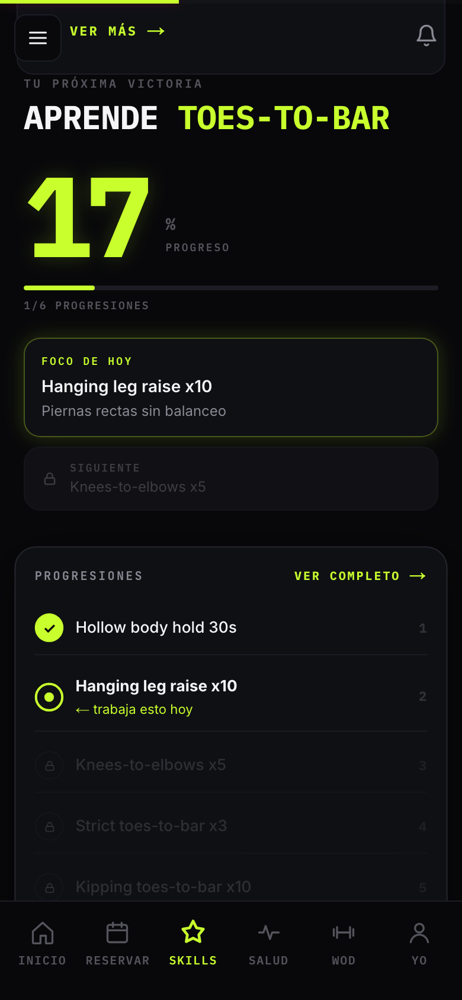
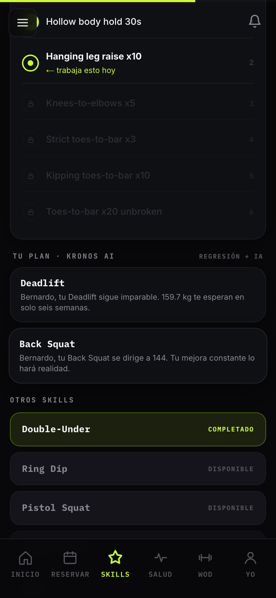
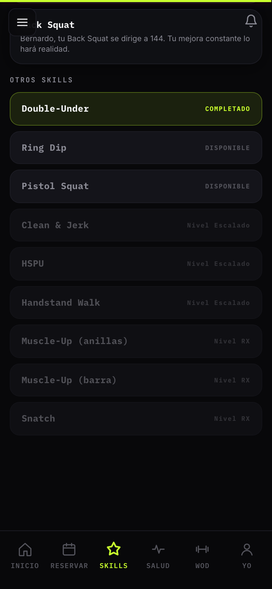
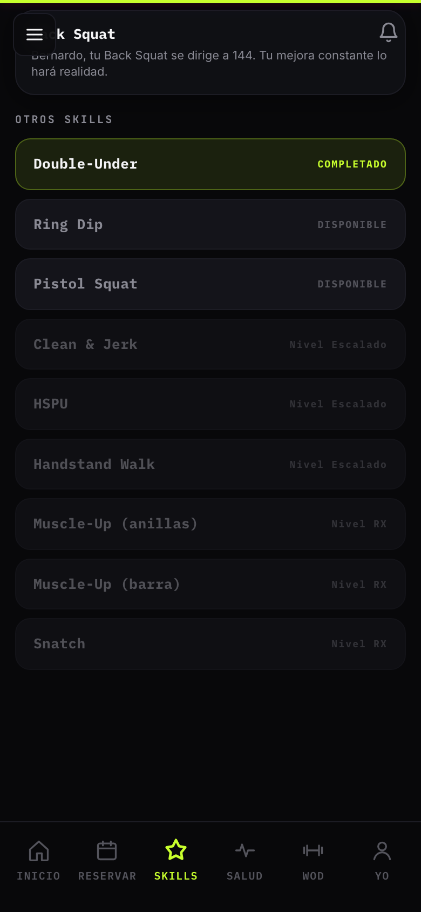

KRONOS
Cómo usar Skills
Escuchar

Paso 1 de 6
Tu Página de Skills
Tu nivel actual visible arriba: PRINCIPIANTE, INTERMEDIO o AVANZADO. Más abajo, lo que Kronos te recomienda esta semana.

Paso 2 de 6
Coach IA de la Semana
Tres tarjetas con recomendaciones específicas: qué movimiento revisar, qué PR celebrar, qué patrón mejorar.

Paso 3 de 6
Tu Próxima Victoria
El skill activo que Kronos te asignó. Aquí está el objetivo grande, en grande, en mayúsculas.

Paso 4 de 6
Progresiones
Cada skill se divide en pasos. Las verdes están completadas, la amarilla con punto es tu foco actual, las grises siguen.

Paso 5 de 6
Tu Plan con Kronos IA
Movimientos específicos que Kronos recomienda para tu siguiente PR, basados en tu historial real.

Paso 6 de 6
Otros Skills
Al final ves todos los skills disponibles. Toca cualquiera para cambiar tu foco.
1 / 6